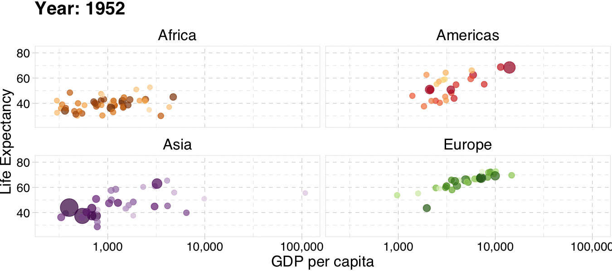
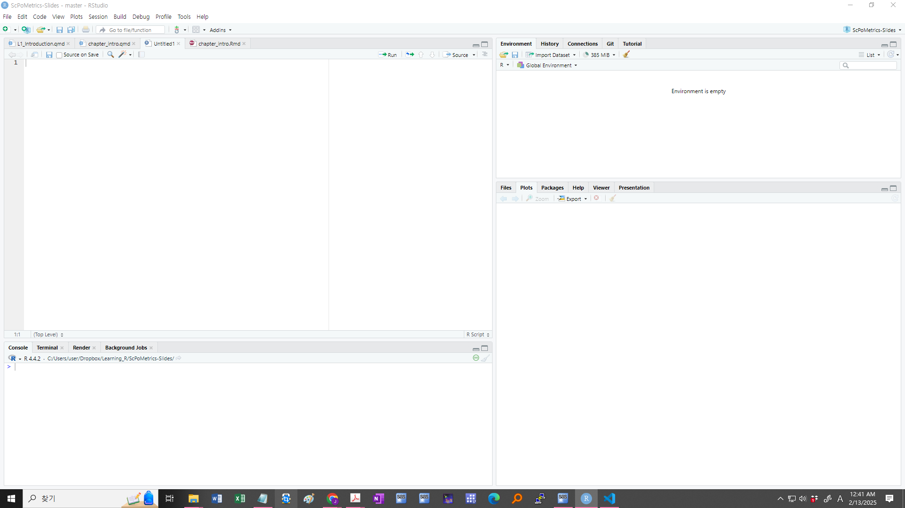

Introduction
FMB819: R을 이용한 데이터분석
Welcome to FMB 819!
수업의 목표
- 통계 소프트웨어 R과 친숙해지고,
- 데이터를 수집, 가공, 표현할 수 있으며
- 기본적 통계 개념 이해하여
- 데이터 분석의 결과를 해석할 수 있다.
데이터 분석의 목표
- 기술 요약(Description): 현상을 설명
- 예측(Prediction): 관측되지 않는 값을 예측
- 인과 관계(Causality): 한 변수가 다른 변수에 미치는 영향 분석
데이터 분석을 통해 답하고자 하는 질문
- 기술요약(Description):
- 한국 성인 중 연 소득이 2천만원 미만인 사람은 몇 명인가? 평균 소득은 얼마인가? 대학 학위가 있는 사람과 없는 사람 간 평균 소득 차이는 얼마인가?
- 예측(Prediction):
- 회사 웹사이트 방문자의 소득 (광고 목적)? 다음 분기 한국의 총소비 및 총소득은?
- 인과 관계(Causality):
- 한 개인이 대학 학위를 가졌을 때와 가지지 않았을 때의 소득 차이는 얼마나 될까? (다른 모든 조건 – 부모의 배경, 키, 사회적 기술 등 – 이 동일하다고 가정할 때), 해당 개인이 남성이었을 경우 소득은 얼마나 달라질까?
…continued
많은 경우 의사 결정을 위해서 기술/예측/인과 관계를 조합적으로 파악할 필요
우수한 학생들을 돕기 위해 다른 학생들의 기회를 희생할 수 있는 특목고를 운영해야 할까?
특목고 운영 여부는 특목고가 다양한 학생들에게 미치는 인과적 효과뿐만 아니라, 현재 학생 구성(기술)과 미래 학생 구성(예측)을 고려해야.
물론 의사결정을 위해서는 가치판단이 필요: 이는 데이터 분석의 영역이 아님
R이란?
R은 강력한 통계 및 그래픽 기능을 갖춘 프로그래밍 언어.R을 사용하는 이유- 무료(free)이며 오픈소스(open source)
- 유연하고 강력함 → 데이터 정리, 시각화, 기계학습 등 거의 모든 분석 가능.
- 활발한 온라인 커뮤니티, 대부분의 문제에 대한 해결책 존재.
R의 많은 기능들 중 우리가 주로 사용할 것들은 …
데이터 처리 (Data Wrangling)
데이터 분석 전에 데이터를 정리하는 데 많은 시간 소요됨.
gapminder데이터셋:1952~2007년 각국의 기대수명, 1인당 GDP, 인구 데이터 포함.
각 연도별/대륙별 평균 기대수명과 평균 1인당 GDP 계산 목표.
우선 연도별/대륙별로 자료를 그룹핑을 하고, 평균 기대수명과 평균 1인당 GDP 계산
# A tibble: 4 × 6
country continent year lifeExp pop gdpPercap
<fct> <fct> <int> <dbl> <int> <dbl>
1 Afghanistan Asia 1952 28.8 8425333 779.
2 Afghanistan Asia 1957 30.3 9240934 821.
3 Afghanistan Asia 1962 32.0 10267083 853.
4 Afghanistan Asia 1967 34.0 11537966 836.…continued
여러 가지 방법으로 이 작업 가능.
여기서는
dplyr패키지를 사용:
library(dplyr)
# compute the required statistics
gapminder_dplyr <- gapminder %>%
group_by(continent, year) %>%
summarise(count = n(),
mean_lifeexp = mean(lifeExp),
mean_gdppercap = mean(gdpPercap))
# show first 5 lines of the new data
head(gapminder_dplyr, n = 5)# A tibble: 5 × 5
# Groups: continent [1]
continent year count mean_lifeexp mean_gdppercap
<fct> <int> <int> <dbl> <dbl>
1 Africa 1952 52 39.1 1253.
2 Africa 1957 52 41.3 1385.
3 Africa 1962 52 43.3 1598.
4 Africa 1967 52 45.3 2050.
5 Africa 1972 52 47.5 2340.Visualisation
- 그래프를 그리기
gapminder_dplyr:
ggplot(data = gapminder_dplyr, # 데이터셋을 지정
mapping = aes(x = mean_lifeexp, # x축: 평균 기대수명
y = mean_gdppercap, # y축: 평균 1인당 GDP
color = continent, # 색상: 대륙별 구분
size = count)) + # 점 크기: 국가 수
geom_point(alpha = 1/2) + # 반투명한 점 그래프 생성 (alpha=0.5)
labs(x = "Average life expectancy", # x축 라벨 설정
y = "Average GDP per capita", # y축 라벨 설정
color = "Continent", # 색상 범례 제목 설정
size = "Nb of countries") + # 크기 범례 제목 설정
theme_bw() # 흰색 배경의 테마 적용 (black & white theme)Animated Plotting
 출처: Ed Rubin
웹기반 앱 만들기
R 설치 방법: Windows 환경 기준
winget을 이용한 설치- PowerShell 또는 명령 프롬프트(cmd) 열고 아래 명령어 실행
공식 웹사이트에서 다운로드하여 설치
- CRAN 공식 웹사이트에 접속
- “Download R for Windows” 클릭
- “base” 패키지를 선택하고 최신 버전을 다운로드
- 다운로드한 설치 파일 실행 후 기본 설정으로 설치 진행
RStudio 설치 방법
R 프로그래밍 언어를 위한 통합 개발 환경(IDE, Integrated Development Environment)
winget을 이용한 설치- PowerShell 또는 명령 프롬프트 열고 아래 명령어 실행
- RStudio 업그레이드가 필요할 경우 다음 명령어 실행
공식 웹사이트에서 다운로드하여 설치
- RStudio 공식 웹사이트 접속
- “RStudio Desktop”의 무료 버전을 선택하여 다운로드
- 다운로드한 설치 파일 실행 후 기본 설정으로 설치
- 설치 완료 후 RStudio 실행하여 정상 작동하는지 확인
설치 확인
설치가 정상적으로 완료되었는지 확인하기 위해 R과 RStudio 실행.
RStudio 실행
- Windows 검색창에서 “RStudio” 검색 후 실행.
- 콘솔에서
version입력하여 설치된 R 버전 확인.
R에서 간단한 코드 실행
- 다음 코드를 console에서 실행하여 정상 동작하는지 확인.
RStudio Layout
RStudio 환경
RStudio를 실행하면 여러 창(윈도우)으로 구성되어 있음.
콘솔(Console): 명령어를 입력하고 실행하는 창.
>프롬프트에서 R 코드 입력 후 실행스크립트 편집기 (Source Editor):
.R파일을 열거나 작성. 여러 줄의 코드를 작성/실행 가능환경 창 (Environment): 현재 사용 중인 변수와 데이터 프레임을 확인. 데이터 구조를 파악
파일 및 플롯 창 (Files, Plots, Packages, Help)
- Files: 작업 디렉터리 내 파일 목록 확인
- Plots: 생성된 그래프 확인
- Packages: 설치된 패키지 목록 및 관리
- Help: R 함수 및 패키지 도움말 검색 가능
콘솔과 프롬프트
기본적인 실행 방법
>뒤에 명령어 입력 후Enter를 누르면 실행.
R 콘솔 사용 팁
이전 명령어 불러오기: 위쪽 화살표(
↑) 키를 사용하면 이전에 입력한 명령어를 불러옴명령어 자동 완성: Tab 키를 사용하여 변수 및 함수 자동 완성 가능.
여러 줄 입력:
- 긴 명령어 입력 시 자동으로 다음 줄로 넘어감 (
+기호 표시됨). Shift + Enter를 누르면 줄바꿈만 하고 실행되지 않음.
- 긴 명령어 입력 시 자동으로 다음 줄로 넘어감 (
R 스크립트 (Script)
- 새로운 R 스크립트 생성:
File > New File > R Script선택. - 스크립트에서 코드 실행:
Ctrl + Enter: 현재 줄 실행.Ctrl + Alt + R: 전체 스크립트 실행.
- 주석 작성:
#을 사용하여 코드 설명 추가 가능.
Task 1
새로운 R 스크립트를 생성하시오 (
File > New File > R Script) 파일을lecture_intro.R로 저장하시오.다음 코드를 스크립트에 입력하고 실행하시오. 코드를 실행하려면
Ctrl+Enter(코드를 강조 표시하거나 커서를 코드 줄 끝에 놓으면 실행).첫 번째 줄만 실행하면 무슨 일이 일어나는지 확인하시오. (객체 생성)
x의 세제곱을 할당하는x_3이라는 새로운 객체를 만드시오. 할당할 때=또는<-를 사용.
도움말 찾는 방법
R built-in help:
?lm # 함수 앞에 ?를 붙이면 해당 함수의 도움말(설명서)을 확인할 수 있음
help(lm) # help() 함수도 동일한 역할을 하며, 특정 함수의 도움말을 출력함
args(lm) # lm 함수의 인자(argument) 목록을 출력함
example(lm) # lm 함수의 사용 예제(example)를 실행하여 출력함
??lm # "lm"과 관련된 모든 도움말 문서를 검색하여 표시함In practice:

패키지 (Packages)
`R 패키지는 특정 기능을 제공하는 코드와 데이터를 포함한 소프트웨어 패키지
패키지 설치는 간단.
install.packages함수를 사용:패키지의 내용을 사용하려면, Library에서 불러와야 함. 이를 위해
library함수를 사용:업데이트 하려면
벡터 (Vectors)
c함수를 사용하여 벡터, 즉 1차원 배열을 생성.
- 여러 형태의 요소를 벡터로 만들 수 있음. 모두 문자로 변환
* 소괄호: 객체 값을 바로 출력 - 변수 목록보기/삭제하기
- 벡터의 결합
- 수열 (range) 생성
비교 논리 연산
Scalar vs. Scalar 비교
Vector vs. Vector 비교
[1] FALSE TRUE FALSE[1] TRUE FALSE TRUE[1] TRUE FALSE FALSE[1] FALSE TRUE TRUEScalar vs. Vector 비교
비교 논리 연산
is.~ () 함수 : 개체의 속성을 묻는 함수
[1] TRUE TRUE FALSE FALSE FALSE[1] FALSE FALSE TRUE FALSE FALSE[1] FALSE FALSE FALSE TRUE TRUE[1] FALSE FALSE FALSE TRUE FALSE[1] FALSENULL은 완전히 비어 있는 값으로, 벡터에 포함될 경우 자동으로 삭제됨.na는 not available,nan는 not a number (예, 0/0, sqrt(-1)).nan은 숫자형 결측값,na는 모든 종류의 결측값이라 생각하면 됨.
인덱스의 활용
- 대괄호 연산자
[index]를 사용하여 벡터 요소 위치 지정. 제외하고 싶은 원소의 인덱스는 음수 \(-\)로.
[1] 0[1] 0 1 1[1] 0 1 2[1] 1 1 2 3 5 8[1] 1 2 3 5 8[1] TRUE TRUE TRUE TRUE TRUE FALSE FALSE[1] 0 1 1 2 3which(): 조건에 해당하는 인덱스를 찾아줌
R 연산자 정리
1. 기초 연산자 (Arithmetic Operators)
| 연산자 | 설명 | 예제 | 결과 |
|---|---|---|---|
+ |
덧셈 | 5 + 3 |
8 |
- |
뺄셈 | 5 - 3 |
2 |
* |
곱셈 | 5 * 3 |
15 |
/ |
나눗셈 | 5 / 3 |
1.6667 |
^ 또는 ** |
거듭제곱 | 5^3 |
125 |
%% |
나머지 | 5 %% 3 |
2 |
%/% |
정수 나눗셈 | 5 %/% 3 |
1 |
2. 관계 연산자 (Comparison Operators)
| 연산자 | 설명 | 예제 | 결과 |
|---|---|---|---|
== |
같음 | 5 == 3 |
FALSE |
!= |
다름 | 5 != 3 |
TRUE |
> |
초과 | 5 > 3 |
TRUE |
< |
미만 | 5 < 3 |
FALSE |
>= |
이상 | 5 >= 3 |
TRUE |
<= |
이하 | 5 <= 3 |
FALSE |
3. 논리 연산자 (Logical Operators)
| 연산자 | 설명 | 예제 | 결과 |
|---|---|---|---|
& |
AND (벡터 연산) | c(TRUE, FALSE) & c(TRUE, TRUE) |
TRUE FALSE |
| |
OR (벡터 연산) | c(TRUE, FALSE) | c(FALSE, FALSE) |
TRUE FALSE |
! |
NOT | !TRUE |
FALSE |
&& |
AND (단일 값 연산) | TRUE && FALSE |
FALSE |
|| |
OR (단일 값 연산) | TRUE || FALSE |
TRUE |
data.frame
data.frame은 표 형식(tabular)의 데이터를 나타냄. 엑셀 스프레드시트와 유사.
example_data = data.frame(x = c(1, 3, 5, 7),
y = c(rep("Hello", 3), "Goodbye"),
z = c("one", 2, "three", 4))
example_data x y z
1 1 Hello one
2 3 Hello 2
3 5 Hello three
4 7 Goodbye 4data.frame은 행(rows) 과 열(columns) 의 두 가지 차원을 가짐. 행렬(matrix) 과 유사하며,[row_index,col_index]형식으로 요소를 선택 가능.
- 실제로는
data.frame을 직접 생성하기보다는, 데이터를 포함하는 파일을R로 불러오는 방식이 일반적.
data.frame
Dataframe을 설명하는 데 유용한 함수
'data.frame': 4 obs. of 3 variables:
$ x: num 1 3 5 7
$ y: chr "Hello" "Hello" "Hello" "Goodbye"
$ z: chr "one" "2" "three" "4"Task 2
help(read.csv)또는 웹서치를 통해 R에서.csv파일을 가져오는 방법을 찾아보시오. 단, “Import Dataset” 버튼을 사용하거나 패키지를 설치하지 마시오.gun_murders.csv 파일을 새로운 객체
murders에 저장하시오. 이 파일은 2010년 미국 주별 총기 살인 사건 데이터를 포함. (힌트: 객체는=또는<-를 사용하여 생성)murders가data.frame형식인지 확인하시오:class(murders)murders에 포함된 변수를 확인하시오:작업 공간에서
murders를 클릭하여 내용을 확인하시오total변수는 무엇을 의미하는 것일까?
데이터프레임 열 (column) 접근하기
- 한 개의 열을 벡터 형태로 추출하려면
$연산자 (murders$state) 또는 대괄호 연산자[which_index]를 이름이나 위치 인덱스와 함께 사용할 수 있음:
[1] "Alabama" "Alaska" "Arizona" "Arkansas" "California"[1] "Alabama" "Alaska" "Arizona" "Arkansas" "California"[1] "Alabama" "Alaska" "Arizona" "Arkansas" "California"- 객체의
class확인 (데이터구조):
typeof함수: 데이터 저장 방식
data.frames: subset
- 데이터프레임에서 특정 부분을 선택하려면
murders[행 조건, 열 번호]또는murders[행 조건, "열 이름"]을 사용.
# 총기 살인 사건이 500건 이상인 주만 선택하고 "state"와 "total" 변수만 유지
murders[murders$total > 500, c("state", "total")] state total
5 California 1257
10 Florida 669
33 New York 517
44 Texas 805# 캘리포니아와 텍사스만 선택하고 "state"와 "total" 변수만 유지
murders[murders$state %in% c("California", "Texas"), c("state", "total")] state total
5 California 1257
44 Texas 805subset명령어 사용 가능 (종종 더 직관적)
Task 3
murders데이터프레임에는 몇 개의 관측값(observations)이 있는가?몇 개의 변수? 각 변수의 데이터 유형(data type)은 무엇인가?
“
:” 연산자는1:10처럼 사용하면 1부터 10까지의 연속된 숫자 생성을 의미함. 이를 활용하여murders의 10번부터 25번 행을 포함하는 새로운 객체murders_2를 만드시오.state와total열만 포함하는murders_3객체를 만드시오. (c함수가 벡터를 생성함)아래 코드를 실행하여 10,000명당 살인 사건 수를 나타내는
total_percap변수를 생성하시오.
murders 객체를 클릭하여 새 변수를 확인해 보시오.
강의 관련 정보
성적 산출
거의 모든 수업에서 in-class assignment (
task) 를 완성해서 제출 \(\rightarrow\) 40%: 과제당 점수: 40/과제 개수기말 프로젝트 \(\rightarrow\) 60%
출석은 확인하지 않음.
시험은 없음.
보통 A는 30%이내 (A+는 아주 뛰어난 경우), C는 총점 50점 미만의 경우, D/F 는 아주 저조한 경우
수업 정책
Be nice. Be honest. Don’t cheat.
숙제는 늦게 제출하면 안됨: 특별한 상황이 아닌 이상, 수업 끝나기 전에 모두 제출
부정행위 및 타인의 과제 무단 활용 금지: C나 F 중 불리한 등급 받게 됨
그룹으로 협력: 협력 장려, 다만 개인이 작성하여 제출
과제 제출 방법
Quarto Document로 작성, Quarto Pub에 Publish하여, 웹페이지 링크를 LMS에 제출.
1. 새 Quarto 문서 생성
- RStudio에서 File → New File → Quarto Document… 선택
- title과 포맷(HTML) 선택 후 Create 버튼 클릭
- 생성된
.qmd파일에서 문서를 작성.
2. 과제 템플릿 예시
다음 양식을 이용하여 과제 제출: 과제 양식 링크
과제 작성 후 적당한 곳에 저장, 예:
C:\Users\user\Documents\assignment\assign1.qmd같은 폴더에 다음 내용을 메모장에 붙여 넣고
_quarto.yml로 저장project: type: website format: html: default
3. Quarto 문서 렌더링
RStudio에서 Render 버튼 클릭
HTML 문서가 생성됨 (
홍길동.html생성됨)
4. Quarto Pub에 게시하기
- Quarto Pub 계정 생성
- https://quartopub.com/에 접속
- 회원가입 및 로그인
- RStudio에서 게시
- terminal에서 파일을 저장한 폴더로 이동
cd C:\Users\user\Documents\assignment
quarto publish quarto-pub- 인증 절차 따라함
- terminal에서 파일을 저장한 폴더로 이동
5. 게시된 문서 링크 제출
- Quarto Pub에서 제공하는 링크 복사
- 과제 제출 페이지에 링크 제출 (LSM시스템에 업로드)
강의 계획
주제 1: Introduction
주제 2: Tidying, Visualising and Summarising Data
주제 3: Simple Linear Regression
주제 4: Introduction to Causality
주제 5: Multiple Linear Regression
주제 6: Linear Regression Extensions
주제 7: Sampling
주제 8: Confidence Intervals and Hypothesis Testing
주제 9: Statistical Inference
주제 10: Difference-in-Differences (Optional)
주제 11: Regression Discontinuity Deisign (Optional)
주제 12: Instrumental Variables (Optional)
기타 유용한 자료
통계/ 계량경제
- Mastering Metrics by Angrist and Pischke
- Introductory Econometrics: A Modern Approach by Wooldridge
- Introductory Econometrics by Kaplan
R의 활용
THE END!